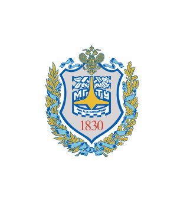

Учебное заведение
МГТУ им Н.Э. Бумана
 Московский государственный технический университет им. Н. Э. Ба́умана (полное название Федеральное государственное бюджетное образовательное учреждение высшего профессионального образования «Московский государственный технический университет им. Н. Э. Баумана», также известен как Бауманка, Бауманский, МГТУ, МВТУ) — российский национальный исследовательский университет, научный центр, особо ценный объект культурного наследия народов России. Первый технический университет в России.
Предыдущее название университета «Московское Высшее Техническое училище им. Н. Э. Баумана» было присвоено ему в честь революционера Николая Эрнестовича Баумана, убитого в 1905 году недалеко от главного здания в то время — Императорского Московского Технического Училища.
Вуз активно участвует в Болонском процессе. В 2008 году он получил награду «Европейское качество» «за стремление достичь высокого качества образовательных услуг в соответствии с международными стандартами». МГТУ им. Н. Э. Баумана в течение более чем 10 лет является головным вузом Ассоциации технических университетов, в состав которой входят более 130 российских университетов. МГТУ — первый российский вуз, ставший членом ассоциации «Top Industrial Managers for Europe».
За вклад в развитие науки и техники, в воспитание инженерных кадров МГТУ им. Н. Э. Баумана награждён орденами Ленина, Октябрьской Революции и Трудового Красного Знамени. Указом Президента Российской Федерации от 24 января 1995 года № 64 МГТУ включен в Государственный свод особо ценных объектов культурного наследия народов Российской Федерации.